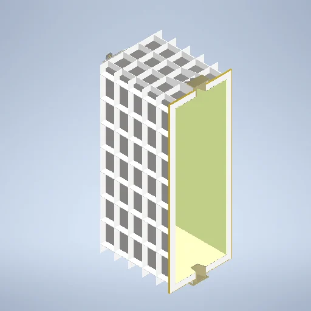

IV
Autodesk Inventor
Modelagem 3D de peças e conjuntos soldados, desenhos de fabricação e análise de tensões por elementos finitos.
Sou Guilherme dos Santos Braz, técnico de processos de caldeiraria e usinagem na Sofir do Brasil, técnico em Eletrotécnica pelo CEFET-MG e graduando em Engenharia Mecânica pelo IFMG.

Modelagem 3D de peças e conjuntos soldados, desenhos de fabricação e análise de tensões por elementos finitos.
Desenho técnico 2D e 3D, detalhamento e redesenho de peças e conjuntos, folhas com cotas e lista de material.
Programação de corte CNC: cadastro das peças detalhadas em CAD e aproveitamento de chapas.
Ordens de produção e solicitações de compra, do cadastro ao acompanhamento.
Excel para listas de materiais, controles e automações em VBA; Word para relatórios e documentos técnicos.
Meu trabalho começa no desenho técnico e termina no chão de fábrica. Interpreto projetos de equipamentos de caldeiraria pesada, monto listas de materiais, detalho peças em CAD para programação de corte no Lantek, emito requisições de compra e ordens de produção e dou suporte técnico a caldeireiros, montadores e soldadores.
No meio desse fluxo, percebi que muitas tarefas repetitivas podiam virar software. Assim nasceu a ferramenta abaixo, um aplicativo de otimização de corte criado para suprir uma demanda que encontrei no meu próprio processo. De forma independente, também comecei a desenvolver projetos mecânicos para clientes, do conceito ao cálculo estrutural, colocando em prática o que estudo na engenharia.
Meu objetivo é me tornar um engenheiro mecânico completo, que domina o processo de fabricação e também sabe construir as ferramentas digitais para melhorá-lo.
Sofir do Brasil Construções Industriais · Contagem, MG
Promovido após a trajetória no PCP. Planejamento da fabricação de equipamentos de caldeiraria pesada para mineração e siderurgia, com análise e otimização de processos de caldeiraria e usinagem, detalhamento de peças para corte CNC no Lantek, requisições de compra com relatórios de chapas, gestão de ordens de produção e suporte técnico à fábrica em montagem, solda, acabamento, controle de qualidade e pintura.
Sofir do Brasil Construções Industriais · Contagem, MG
Interpretação de desenhos mecânicos, geração de listas de materiais, detalhamento e redesenho de peças e conjuntos em AutoCAD 2D e 3D, criação de ordens de produção e solicitações de compra no TOTVS Protheus.
SWE Engenharia Elétrica e Automação · Belo Horizonte, MG
Suporte em projetos de engenharia elétrica e automação industrial e execução de instalações sob supervisão técnica.
Belgo Bekaert Arames · Contagem, MG
Primeiro contato com a indústria metalúrgica de grande porte.
O caminho de um equipamento pelo meu processo, etapa por etapa.
Projeto mecânico do conceito ao cálculo, desenvolvido de forma independente para cliente.
Suporte de fachada que gira 180° em torno de um pivô central, alternando entre a posição de trabalho e a de manutenção. O técnico acessa o equipamento sem andaime nem trabalho em altura fora da estrutura.
Folhas A2 do projeto. Toque numa folha para abrir, aproximar e arrastar.
O que aprendi: [EX.: COMO UMA CHAPA SOLDADA EM TUBO DE PAREDE FINA VIRA O PONTO CRÍTICO, E A IMPORTÂNCIA DE VALIDAR CONTATOS E UNIDADES NA SIMULAÇÃO]
Inventor · Análise de tensões · NBR 6123 · ASTM A36 · SAE 1020 · Three.js
Ferramenta criada a partir de uma demanda real do meu processo, hoje distribuída como produto.
Otimização de corte linear de perfis e barras
Calcula o melhor aproveitamento das barras (algoritmo First-Fit Decreasing), considera as sobras já em estoque, gera relatório em PDF vetorial e imprime etiquetas direto na impressora Zebra. Organiza o histórico de trabalhos por commessa, com numeração automática de RCs, e funciona em equipe, com banco compartilhado entre os computadores da rede.
Resultado: [EX.: X% DE MELHORA NO APROVEITAMENTO / TEMPO ECONOMIZADO POR TRABALHO]
Python · PySide6 · Supabase · Vercel · Mercado Pago · ZPL · Inno Setup
Acessar o site ↗

© 2026 Guilherme dos Santos Braz